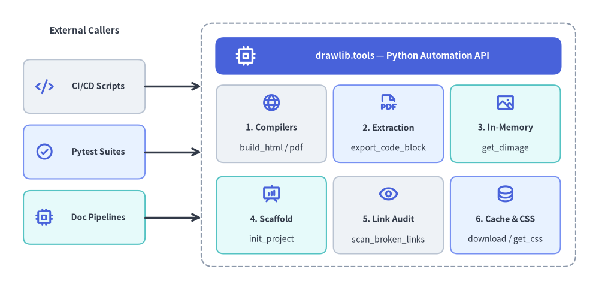
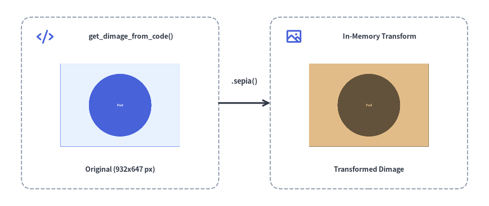

Programmatic Python API (drawlib.tools)
While the drawlib CLI provides terminal commands for common workflows, Drawlib exposes a comprehensive Python developer API under drawlib.tools. This API allows you to integrate document compilation, diagram export, image snapshot testing, and template automation directly into CI/CD pipelines, web servers, and custom build scripts.
The drawlib.tools facade organizes programmatic automation into six core subsystems:

Source Code
from drawlib.canvas import save, setup
from drawlib.icons import phosphor
from drawlib.lines import line
from drawlib.shapes import rectangle
from drawlib.styles import Styles
from drawlib.text import text
setup(width=128, height=62)
# Left Column: External Callers
text((18, 55.5), "External Callers", style=Styles.DarkBold.patch(text_size=10.8))
callers = [
(43.5, "CI/CD Scripts", Styles.Neutral, phosphor.code),
(29.5, "Pytest Suites", Styles.PrimaryNeutral, phosphor.check_circle),
(15.5, "Doc Pipelines", Styles.SecondaryNeutral, phosphor.cpu),
]
for cy, clabel, cst, cicon in callers:
rectangle((18, cy), width=26, height=11.5, style=cst.patch(shape_r=1.5))
cicon((9.5, cy), width=4.0, style=Styles.PrimaryBold)
text((21.0, cy), clabel, style=Styles.DarkBold.patch(text_size=10.0))
# Right Container: drawlib.tools Facade + 3x2 Subsystem Grid
rectangle((83, 31), width=80, height=52, style=Styles.MutedDashed.patch(shape_r=2.5))
rectangle((83, 50.0), width=74, height=8.0, style=Styles.PrimaryFlat.patch(shape_r=1.8))
phosphor.cpu((52.5, 50.0), width=4.6, style=Styles.WhiteBold)
text((86.0, 50.0), "drawlib.tools — Python Automation API", style=Styles.WhiteBold.patch(text_size=10.8))
# Row 1 of 3x2 Grid
grid_items = [
(58.0, 35.5, "1. Compilers", "build_html / pdf", Styles.Neutral, phosphor.globe),
(83.0, 35.5, "2. Extraction", "export_code_block", Styles.PrimaryNeutral, phosphor.file_pdf),
(108.0, 35.5, "3. In-Memory", "get_dimage", Styles.SecondaryNeutral, phosphor.image),
(58.0, 16.0, "4. Scaffold", "init_project", Styles.SecondaryNeutral, phosphor.presentation_chart),
(83.0, 16.0, "5. Link Audit", "scan_broken_links", Styles.Neutral, phosphor.eye),
(108.0, 16.0, "6. Cache & CSS", "download / get_css", Styles.PrimaryNeutral, phosphor.database),
]
for gx, gy, gtitle, gsub, gst, gicon in grid_items:
rectangle((gx, gy), width=23.5, height=16.5, style=gst.patch(shape_r=1.5))
gicon((gx, gy + 4.5), width=4.2, style=Styles.PrimaryBold)
text((gx, gy - 0.8), gtitle, style=Styles.DarkBold.patch(text_size=10.2))
text((gx, gy - 5.2), gsub, style=Styles.Dark.patch(text_size=10.0))
# Connectors from External Callers to drawlib.tools Container
line((31, 43.5), (43, 43.5), arrow_head="->", style=Styles.DarkBold)
line((31, 29.5), (43, 29.5), arrow_head="->", style=Styles.DarkBold)
line((31, 15.5), (43, 15.5), arrow_head="->", style=Styles.DarkBold)
save()
1. Module Overview & Complete Exports (drawlib.tools)
from drawlib.tools import (
# Document, Slide, & Image Compilation
build_document,
build_html,
build_markdown,
build_pdf,
build_slide,
build_image,
detect_document_type,
# Single Diagram Extraction & Desktop Preview
export_code_block,
show_code_block,
# Project Scaffolding
init_project,
list_project_types,
# Local Preview Server & Broken Link Scanner
serve_docs,
scan_broken_links,
# Cache Management
list_cache,
clear_cache,
download_cache,
# CSS Stylesheet Presets
list_css,
list_html_css,
list_pdf_css,
list_slide_css,
get_css,
export_css,
)
| Category | Function | Description |
|---|---|---|
| Compilation | build_html(input_dir, output_dir=None, *, image_format="png", styles_path=None, utils_path=None, no_cache=False, css_mode="external") |
Compile Markdown directory (site or doc) into static HTML. |
| Compilation | build_markdown(input_dir, output_dir=None, *, image_format="png", styles_path=None, utils_path=None, no_cache=False) |
Compile source Markdown into GitHub-Flavored Markdown + companion images. |
| Compilation | build_pdf(input_path=None, output_file=None, *, title=None, page_break=True, generate_index=False, styles_path=None, utils_path=None, no_cache=False, timestamp=False) |
Merge Markdown chapters or slide deck into a vector PDF via headless Chromium. |
| Compilation | build_slide(input_dir, output_dir=None, *, title=None, theme=None, image_format="svg", styles_path=None, utils_path=None, no_cache=False) |
Compile a slide_src/ directory into an interactive 16:9 HTML slide deck (index.html). |
| Compilation | build_image(input_path, output_path=None, *, format=None, styles_path=None, utils_path=None, grid=False, disable_auto_clear=False, enable_auto_initialize=False, no_cache=False) |
Batch execute standalone .py scripts or extract .md blocks to image files. |
| Compilation | build_document(input_dir, output_path=None, output_format=None, ...) |
Unified dispatcher for "html", "markdown", or "pdf" compilation. |
| Inspection | detect_document_type(file_path, content=None) |
Detect whether a file/directory is Markdown or HTML (DocumentInputInfo). |
| Extraction | export_code_block(file_path, target=None, output_path=None, styles_path=None, utils_path=None, grid=False, no_cache=False) |
Headlessly render a single drawlib block or .py script to disk (or list blocks when target=None). |
| Extraction | show_code_block(file_path, target=None, styles_path=None, utils_path=None, grid=False, no_cache=False) |
Preview a single drawlib block or .py script in a desktop GUI window. |
| Scaffolding | init_project(project_type, destination=".", target=None, force=False, lang="en", style=None) |
Scaffold a "doc", "site", "slide", or "images" starter project. |
| Scaffolding | list_project_types() |
Return dict[str, str] mapping starter template names (doc, site, slide, images) to descriptions. |
| Server & Audit | serve_docs(directory, port=8000, open_browser=True, skip_check=False, check_only=False) |
Run local HTTP preview server (Cache-Control: no-store) with pre-flight link checking. |
| Server & Audit | scan_broken_links(directory) |
Scan compiled HTML directory and return (html_count, link_count, broken_links). |
| Cache | list_cache(), download_cache(all_assets=True, fonts=False, icons=False, maps=False), clear_cache() |
Inspect, pre-download, or purge cached font, icon, and map packages. |
| CSS Themes | list_css(target="html"), list_html_css(), list_pdf_css(), list_slide_css(), get_css(name, target="html", lang="en"), export_css(name, output_path=None, target="html", force=False, lang="en") |
Inspect, synthesize, or export built-in 3-layer CSS theme stylesheets. |
2. Document, Slide & Image Compilation API
2.1 build_html() & build_markdown()
Compiles a documentation source directory (docs_src/) into a static HTML website and GitHub-Flavored Markdown:
from drawlib.tools import build_html, build_markdown
build_html(
input_dir="docs_src/",
output_dir="docs_html/",
styles_path="docs_src/styles.py", # Optional custom styles script
utils_path="docs_src/utils.py", # Optional drawing helper script
no_cache=False, # Set True to bypass SQLite cache
image_format="png", # "png" or "webp"
)
build_markdown(
input_dir="docs_src/",
output_dir="docs_markdown/",
styles_path="docs_src/styles.py",
)
2.2 build_pdf() & build_slide()
Compiles linear documents or 16:9 slide decks into vector PDFs and interactive HTML presentations:
from drawlib.tools import build_pdf, build_slide
# Compile linear document with Table of Contents and chapter page breaks:
build_pdf(
input_path="doc_src/",
output_file="doc.pdf",
generate_index=True, # Generate Table of Contents (--toc)
page_break=True, # Page break before each chapter
)
# Compile 16:9 interactive HTML presentation deck:
build_slide(
input_dir="slide_src/",
output_dir="slide_html/",
image_format="svg",
)
2.3 build_image()
Batch executes standalone Python scripts in images_src/ or extracts embedded diagrams from Markdown files:
from drawlib.tools import build_image
build_image(
input_path="images_src/",
output_path="images/",
styles_path="images_src/styles.py",
utils_path="images_src/utils.py",
grid=False,
)
3. Single Diagram Extraction (export_code_block)
Extracts and renders a single diagram from a Markdown file or a standalone .py script without opening a GUI display:
from drawlib.tools import export_code_block
# Extract a named block from Markdown with coordinate grid (Recommended):
export_code_block(
file_path="docs_src/architecture.md",
target="service_arch.png", # Explicit file: name or 1-based index ("1")
output_path=".drawlib/scratch/arch.png",
grid=True, # Overlay coordinate grid
)
# Export from standalone Python script:
export_code_block(
file_path="images_src/diagram.py",
output_path="images/diagram.png",
grid=False,
)
4. In-Memory Image API (get_dimage & get_dimage_from_code)
Drawlib can capture canvases directly into in-memory Dimage objects (from drawlib.canvas import get_dimage or from drawlib.images import get_dimage_from_code) without writing temporary files to disk:
get_dimage()(from drawlib.canvas import get_dimage): Captures the currently active canvas into aDimageinstance (dimage.get_image_size(),dimage.get_pil_image(),dimage.trim(),dimage.sepia(),dimage.save(...)).get_dimage_from_code(code)(from drawlib.images import get_dimage_from_code): Executes a self-contained Python drawing snippet in an isolated sandbox and returns the renderedDimagein memory:
from drawlib.canvas import get_dimage, save, setup
from drawlib.icons import phosphor
from drawlib.images import get_dimage_from_code, image
from drawlib.lines import line
from drawlib.shapes import rectangle
from drawlib.styles import Colors, Styles
from drawlib.text import text
# 1. Execute a self-contained Python snippet in an isolated sandbox to get a Dimage
sub_dimage = get_dimage_from_code("""
from drawlib.canvas import setup
from drawlib.shapes import circle, rectangle
from drawlib.styles import Styles
setup(width=28, height=20)
rectangle((14, 10), width=26, height=18, style=Styles.PrimaryNeutral)
circle((14, 10), radius=6.8, style=Styles.PrimaryFlat, text="Pod", text_style=Styles.WhiteBold.patch(text_size=18))
""").trim()
# 2. Apply non-destructive Dimage transformations in memory
sepia_dimage = sub_dimage.sepia()
w_px, h_px = sub_dimage.get_image_size()
# 3. Composite both in-memory Dimage objects onto the main canvas
setup(width=114, height=48)
rectangle((28, 24), width=46, height=40, style=Styles.MutedDashed.patch(shape_r=2.5))
phosphor.code((10.5, 39.5), width=4.0, style=Styles.PrimaryBold)
text((30.5, 39.5), "get_dimage_from_code()", style=Styles.DarkBold.patch(text_size=10.2))
image((28, 23.5), width=28, image=sub_dimage, style=Styles.Primary.patch(shape_line_width=1.2, shape_line_color=Colors.Primary))
text((28, 8.5), f"Original ({w_px}x{h_px} px)", style=Styles.DarkBold.patch(text_size=10.2))
line((51, 24), (63, 24), arrow_head="->", style=Styles.DarkBold)
text((57, 29.0), ".sepia()", style=Styles.DarkBold.patch(text_size=10.5))
rectangle((86, 24), width=46, height=40, style=Styles.MutedDashed.patch(shape_r=2.5))
phosphor.image((68.5, 39.5), width=4.0, style=Styles.PrimaryBold)
text((88.5, 39.5), "In-Memory Transform", style=Styles.DarkBold.patch(text_size=10.2))
image((86, 23.5), width=28, image=sepia_dimage, style=Styles.Secondary.patch(shape_line_width=1.2))
text((86, 8.5), "Transformed Dimage", style=Styles.DarkBold.patch(text_size=10.2))
# Capture full composite canvas if needed via get_dimage()
_composite_snapshot = get_dimage()
save()

(For slide runtime context helpers current_slide, SlideContext, and BoundingBox, see Slide Stage Layout & API.)
5. Automated Visual & Link Regression Testing with Pytest
Integrate diagram rendering and broken-link scanning into your pytest suite to ensure code changes never break documentation or illustrations:
from pathlib import Path
from drawlib.tools import export_code_block, scan_broken_links
def test_architecture_diagram_renders(tmp_path: Path) -> None:
target_png = tmp_path / "test_diagram.png"
export_code_block(
file_path="docs_src/index.md",
target="1",
output_path=str(target_png),
grid=False,
)
# Assert diagram was generated with valid file size
assert target_png.exists()
assert target_png.stat().st_size > 2048
def test_compiled_html_has_no_broken_links() -> None:
html_count, link_count, broken = scan_broken_links("docs_html/")
assert html_count > 0
assert broken == [], f"Broken links detected: {broken}"